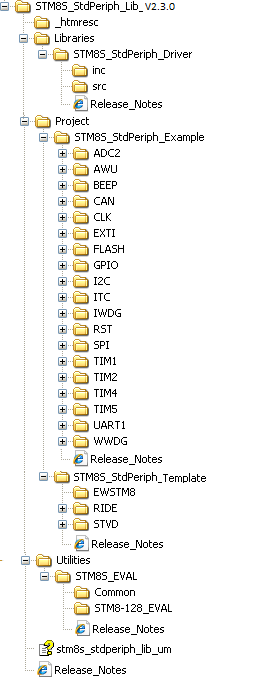

Package description
The
STM8S/A Standard Peripherals library is supplied in one single zip file.
The extraction of the zip file generates one folder, STM8S_StdPeriph_Lib_V2.3.0, which
contains the following subfolders:

 _htmresc folder _htmresc folder
This Folder contains all package html page
resources.
Libraries folder
This folder contains all STM8S/A Standard Peripheral's Drivers.
STM8S_StdPeriph_Driver subfolder
This folder contains all the subdirectories and files
that make up the core of the library:
inc sub-folder contains the
Peripheral's Drivers header files. They do not need to be modified by the
user:
 stm8s_ppp.h (one header file per
peripheral): Function prototypes, data structures and enumeration. stm8s_ppp.h (one header file per
peripheral): Function prototypes, data structures and enumeration.
src sub-folder
contains the Peripheral's Drivers source files. They do not need to be
modified by the user:
stm8s_ppp.c (one source file
per peripheral): Function bodies of each peripheral.
All STM8L15x Standard
Peripheral's drivers are coded in Strict ANSI-C and are independent
from the software toolchain.
Project folder
This folder contains template projects and STM8S/A Standard Peripheral's
examples
This folder contains, for each peripheral
sub-folder, the minimum set of files needed to run a typical example on how
to use this peripheral:
readme.txt: brief text file
describing the example and how to make it work.
stm8s_conf.h: header file allowing to configure the peripherals that are used, and
containing miscellaneous DEFINE statements.
stm8s_it.c: source
file containing the interrupt handlers (the function bodies, may be
emptied if not used).
stm8s_it.h: header file including
all interrupt handler prototypes.
main.c: example of code.
main.h: header file
of the example main.c file (optional).
Template folder
The folder contains
standard template projects for STVD, RIDE7 and EWSTM8 toolchains that compile the needed Standard Peripheral's drivers plus all the user-modifiable
files that are necessary to create a new project:
stm8s_conf.h: header
file allowing to configure the peripherals that are used, and containing
miscellaneous DEFINE statements.
stm8s_it.c:
source file containing the interrupt handlers (the
function bodies are empty in this template).
stm8s_it.h: header file including
all interrupt handlers prototypes.
main.c: main program body.
STVD\Cosmic sub-folder contains
template project for ST Visual Develop (STVD) toolchain with Cosmic compiler
STVD\Raisonance sub-folder
contains template project for ST Visual Develop (STVD)
toolchain with Raisonance STM8/ST7 C compiler RIDE sub-folder
contains template project for Raisonance Integrated Development Environment RIDE7
toolchain with Raisonance STM8/ST7 C compiler EWSTM8 sub-folder
contains template project for IAR Embedded Workbench for STM8 (EWSTM8)
toolchain with IAR C/C++ compiler for STM8
Utilities
folder
STM8S_EVAL Implements
an abstraction layer to interact with the Human Interface resources; buttons, LEDs, LCD and COM ports (USARTs) available on
STMicroelectronics
STM8/128-EVAL evaluation board.
The stm8s_eval.c driver provides a common API to interact with buttons,
LEDs and COM ports, while these resources hardware definitions is
made in the header file of each evaluation board (stm8_128_eval.h).
Common:
contains common part for all STM8S EVAL board containing: Leds, push-buttons, COM ports, serial I2C EEPROM memory
(sEE), SD Card memories and Mono LCD drivers.
STM8-128_EVAL:
contains LEDs, buttons and COM ports
hardware definition file and LCD galss driver for this boarrd
Back to Top
|
For complete documentation on
STM8S 8-bit microcontrollers platform visit www.st.com
|
|